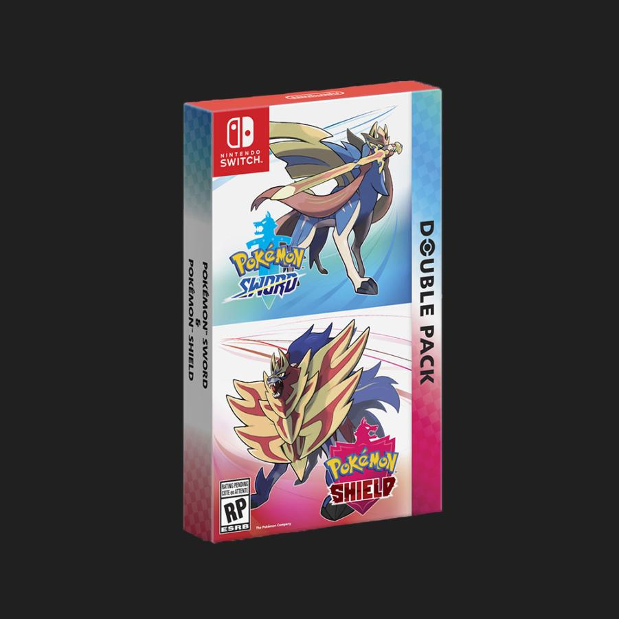

Game Reviews
Pokemon Sword and Shield Double Pack Review

Are These Games Massively Overrated?
The answer is yes. Here's why. The main story is short, and the postgame is lacking, its around 25 hours if you take your time.
The music hit or miss most of the time.
The wild area (the new feature) feels incomplete and it has bad textures and models for the environment. Its also not that big compare to what the developers make it out to be.
The game has pop-in issues both in the wild area and in cities/routes, and has a horrible draw distance.
The game is missing moves like pursuit, return and hidden power.
Some animations in cutscenes and battles are either incredibly lacking, or amazing in some situations.
Half of the pokemon are not coded into the game, and will be impossible to transfer (unless GameFreak changes their stance and updates).
Mega evolution and Z-moves were removed and replaced by dynamax.
Subjective, but some of the new pokemon are really off-putting.
The game, as of release, has a fatal bug that can wipe your SD card.
Your pokemon dont get to follow you.